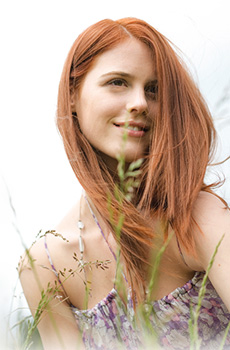

Täydellinen ihonhoito-ohjelma jokaiselle ihotyypille
feel beautiful
Farfallan luomukosmetiikka - tehokkaat, vaikuttavat ainesosat.
Silminnähden tehokas. Huomattavan lempeä. Luonnollisesti uudistava.
"Yhdistän yksilölliseen kokonaisvaltaiseen ihonhoito-ohjelmaani tuotteita, jotka sopivat
henkilökohtaisiin tarpeisiini."
Farfallan feel beautiful -kasvojenhoitosarja on suunniteltu kokonaisvaltaiseen ihonhoitoon. Valitse eri tuotelinjoista puhdistavat ja hoitavat tuotteet, jotka sopivat
juuri sinun ihotyypillesi. Riippuen ihosi kosteuden ja erityishoidon tarpeesta
voit valita seuraavista tuoteryhmistä.

Kaikki Farfallan luonnonmukaiset ihonhoitotuotteet ovat läpikäyneet kansainvälisen NaTrue -luomukosmetiikkasertifioinnin.
Suurin osa tuotteista on tiukassa NaTrue -järjestelmässä tasoa 3, jolloin vähintään 95% raaka-aineista on luomua. Myös kauniissa ja käytännöllisissä pakkauksissa on huomioitu sekä esteettiset että ekologiset näkökohdat.
Farfallan ihonhoidossa yhdistyvät ylellinen luonnonmukainen laatu ja hoitavat, tehokkaat tuotteet
Tehokasta – uudistavien kasvipohjaisten ainesosien ansiosta
Hienostuneet reseptit perustuvat uutta luoviin, aktiivisiin, tarkoin testattuihin kasvipohjaisiin ainesosiin. Farfalla käyttää, aina kun se on mahdollista, vain sertifioituja luomuraaka-aineita. Korkeatasoinen tuotevalikoima tarjoaa yksilölliset hoitoratkaisut kaikille ihotyypeille.
Tehokasta – luomukasviöljyjen ansiosta
Hienointa luomulaatua olevat kallisarvoiset, kylmäpuristetut ja puhtaat kasviöljyt sisältävät runsaasti luonnollisia aktiivisia aineita. Monipuolisten ainesosien hienon vuorovaikutuksen ansiosta iho tulee kokonaisvaltaisesti hoidetuksi.
Tehokasta – vuoristojen lähdeveden sekä kukkaisvesien ansiosta
Vesijohtoveden sijaan Farfallan tuotteet sisältävät luomukriteerit täyttäviä kukkaisvesiä sekä sertifioitua lähdevettä. Tämä hoitava mineraalipitoinen lähdevesi on peräisin tarkoin valitusta vuoristolähteestä, 2470 metrin korkeudesta merenpinnan yläpuolelta, Sveitsin Alpeilta.
Farfallan toiminta on todellisesti eettistä.
Farfalla mm. toteuttaa hyväntekeväisyysprojekteja ja pitää huolta viljelijöistään.
Lue lisää
Maahantuonti ja lisätiedot Auringosta Itään, Kuusta Länteen Tukku Yhteystiedot
Maahantuonti ja lisätiedot Auringosta Itään, Kuusta Länteen Tukku Yhteystiedot